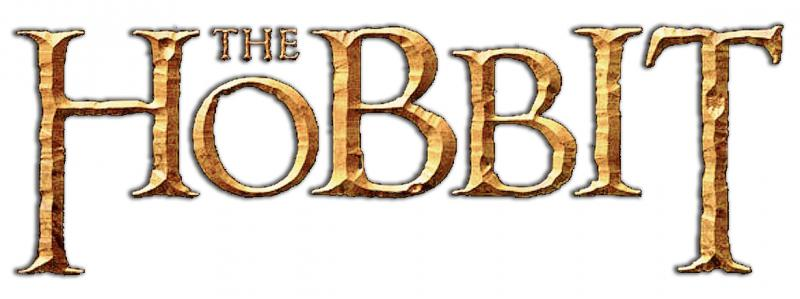

The Lord of the Rings is a series of three epic fantasy adventure films directed by Peter Jackson, based on the novel The Lord of the Rings by J. R. R. Tolkien. The films are subtitled The Fellowship of the Ring (2001), The Two Towers (2002), and The Return of the King (2003). Produced and distributed by New Line Cinema with the co-production of WingNut Films, the series is an international venture between New Zealand and the United States.
The Hobbit is a series of three epic high fantasy adventure films directed by Peter Jackson. The films are subtitled An Unexpected Journey (2012), The Desolation of Smaug (2013), and The Battle of the Five Armies (2014). The films are based on the 1937 novel The Hobbit by J. R. R. Tolkien, with large portions of the trilogy inspired by the appendices to The Return of the King, which expand on the story told in The Hobbit, as well as new material and characters written especially for the films.
Together they act as a prequel to Jackson's The Lord of the Rings film trilogy.